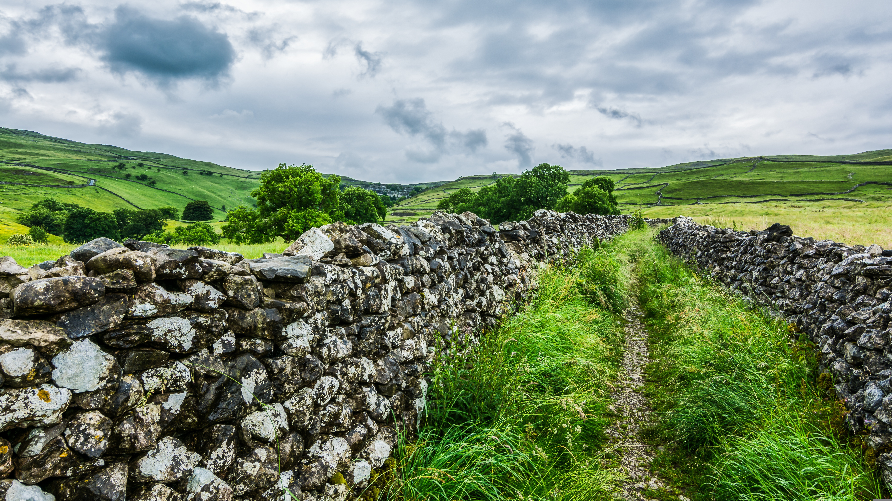

Belezas Naturais
A Inglaterra guarda uma natureza surpreendente, onde a ação humana e o tempo geológico se fundiram para criar paisagens que parecem saídas de uma pintura. Longe dos grandes centros urbanos, o país revela uma mistura equilibrada e fascinante de cenários, que vão de vales bucólicos a litorais imponentes.
No coração do interior inglês, as paisagens rurais verdejantes dominam o horizonte. São colinas onduladas cortadas por muros de pedra centenários e pastagens que ganham tons vivos de verde graças ao clima temperado e úmido.